POL S/CS&SS 501, University of Washington, Winter 2016
$$ \DeclareMathOperator{\mean}{mean} \DeclareMathOperator{\var}{var} \DeclareMathOperator{\E}{E} \DeclareMathOperator{\argmin}{argmin} \DeclareMathOperator{\argmax}{argmax} $$Random Sampling and Distributions in R
Jeffrey Arnold
January 28, 2016
This lesson covers sampling and distributions in R. Although all the functions for the distributions are included in base R, several packges are used for plotting and data wrangling,
library("ggplot2")
library("tidyr")
library("dplyr")Simple Random Samples
The sample function draws a simple random sample.
sample(x, size, replace = FALSE, prob = NULL)The function sample draws a sample of size size from the set in x. If replace = TRUE, then it samples with replacement, otherwise, it samples without replacement. The samples are drawn with equal probability, unless values are provided to prob.
To draw a sample of size 5 from the integers 1 to 10, without replacement.
sample(1:10, 5)## [1] 2 9 8 6 7If no size is given, it draws a sample of the same size as x. Since by default, it samples without replacement, this is equivalent to randomly reordering the vector.
sample(1:10)## [1] 8 6 5 3 1 7 9 2 10 4To sample with replacement, add the argument replace = TRUE,
sample(1:10, 5)## [1] 8 4 1 5 3If replace = TRUE, you can draw samples with sizes larger than the vector of choices,
sample(1:10, 20, replace = TRUE)## [1] 8 4 1 1 3 8 8 10 6 10 10 8 8 6 9 7 4 1 4 3By default, sample() samples from the elements in x with equal probability. To sample from the elements in x with unequal probability, provide those probabilities with the prob argument. For example, to sample from a Bernoulli distribution where the probability of 1 is 0.7 and the probability of 0 is 0.3,
sample(1:0, 10, replace = TRUE, prob = c(0.7, 0.3))## [1] 0 1 1 0 1 0 1 1 0 1Or to sample from a discrete distribution where \(P(X = 1) = 0.2\), \(P(X = 2) = 0.4\), \(P(X = 3) = 0.3\), \(P(X = 4) = 0.1\),
sample(1:4, 20, replace = TRUE, prob = c(0.2, 0.4, 0.3, 0.1))## [1] 1 2 4 1 4 3 2 3 2 3 3 4 1 2 2 2 1 2 2 2Plotting the frequencies of samples without and with the prob argument shows how the weighting affects the sampling,
x_sample_unwt <-
data_frame(x = sample(1:4, 10000, replace = TRUE)) %>%
group_by(x) %>%
tally() %>%
mutate(prob = n / sum(n))
ggplot(x_sample_unwt, aes(x = x, y = prob)) +
geom_bar(stat = "identity")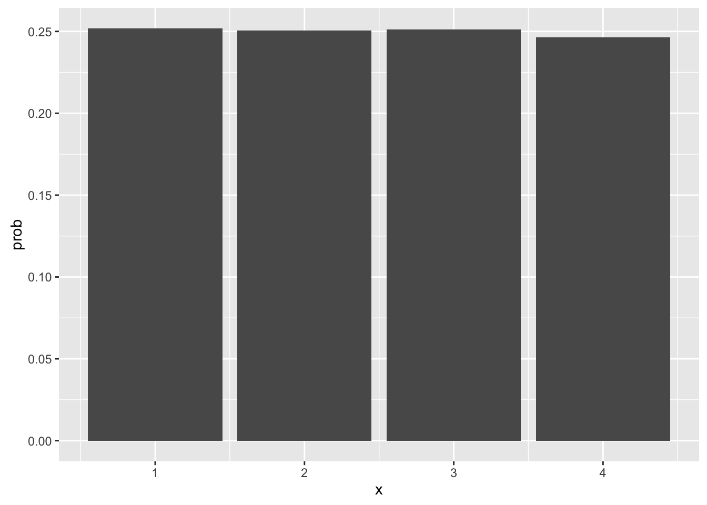
x_sample_wt <-
data_frame(x = sample(1:4, 10000, replace = TRUE,
prob = c(0.2, 0.4, 0.3, 0.1))) %>%
group_by(x) %>%
tally() %>%
mutate(prob = n / sum(n))
ggplot(x_sample_wt, aes(x = x, y = prob)) +
geom_bar(stat = "identity")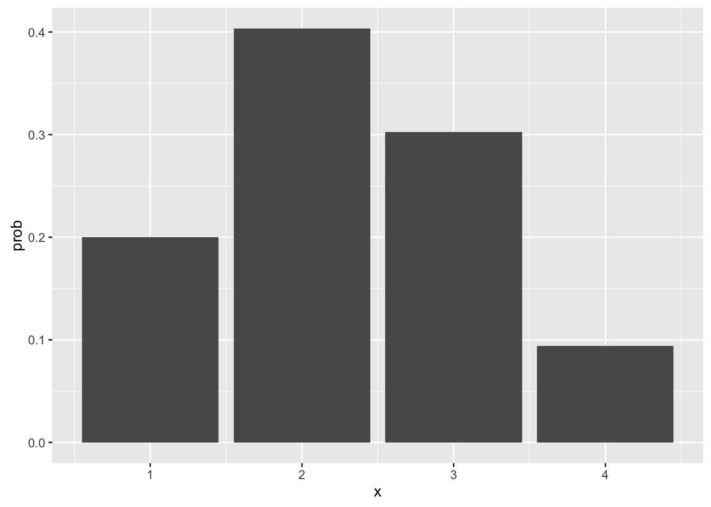
Distributions
R includes
r*draw samples from a distributionq*the quantile function of a distribution: for a given \(p\), the \(x\) such that \(P(X < x) = p\).p*the cumulative probability function of a distribution: for a given \(x\), \(P(X < x)\).d*the probability density (or mass) function of a distribution: \(P(x)\).
For example, the functions for the normal distribution are rnorm, qnorm, pnorm, and dnorm.
For the full list of distributions included in R see the help page for Distributions. For even more distributions, see the CRAN task view Distributions.
Normal Distribution
The functions for the normal distributions are
dnorm: density functionpnorm: probability functionqnorm: quantile functionrnorm: sampling function
The function dnorm calculates the density of the normal distribution at a point. This can be used to draw the “bell-shaped” normal distribution curves. For example,
norm_density <- data_frame(x = seq(-3, 3, length.out = 100),
y = dnorm(x))
ggplot(norm_density, aes(x = x, y = y)) +
geom_line()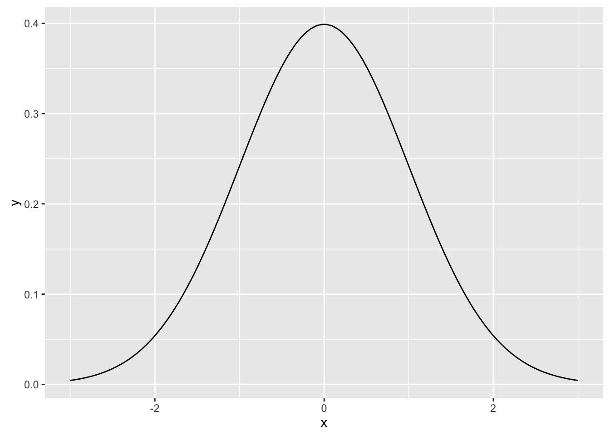 By default, dnorm calculates the density for a standard normal distribution, \(\mu = 0\) and \(\sigma = 1\). Use the arguments, mean and sd, to specify different means or standard deviations. For example, to calculate the density function of a normal distribution with mean 2 and standard deviation 3,
norm_density <- data_frame(x = seq(-7, 11, length.out = 100),
y = dnorm(x, mean = 2, sd = 3))
ggplot(norm_density, aes(x = x, y = y)) +
geom_line()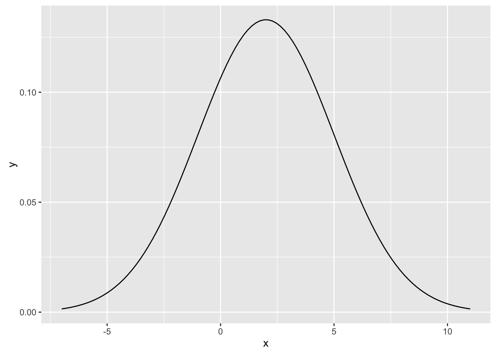
This draws the PDF of several normal distributions with \(\mu = 0\), and \(\sigma \in \{1/3, 1/2, 0, 2, 3\}\)
expand.grid(mu = 0,
sigma = c(1/2, 1, 2)) %>%
group_by(mu, sigma) %>%
do(data_frame(x = seq(-6, 6, length.out = 500),
density = dnorm(x, mean = .$mu, sd = .$sigma))) %>%
ggplot(aes(x = x, y = density, color = factor(sigma))) +
geom_line()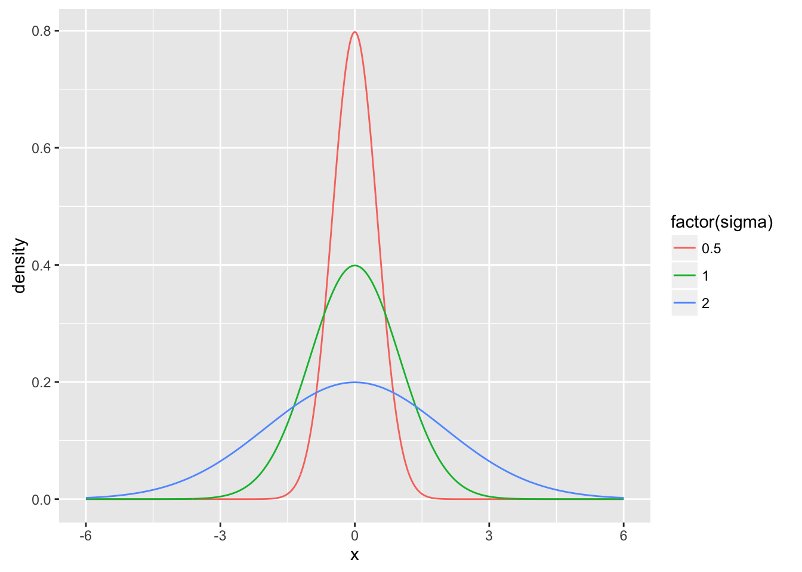 This draws the PDF of several normal distributions with different means, \(\mu \in \{-1, 0, 1\}\), and the same standard deviation, \(\sigma = 1\),
expand.grid(mu = c(-1, 0, 1),
sigma = 1) %>%
group_by(mu, sigma) %>%
do(data_frame(x = seq(-6, 6, length.out = 500),
density = dnorm(x, mean = .$mu, sd = .$sigma))) %>%
ggplot(aes(x = x, y = density, color = factor(mu))) +
geom_line()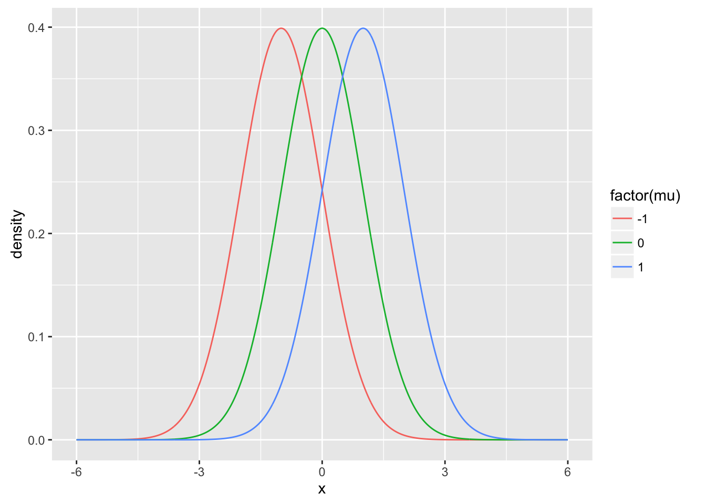
The function pnorm calculates the cumulative distribution function for the normal distribution, \(F(x) = \Pr(X \leq x)\). For example, the probability that a normally distributed \(X\) is less than -1.96 is about 0.025.
pnorm(-1.96)## [1] 0.0249979It can be given several values,
round(pnorm(-3:3), 3)## [1] 0.001 0.023 0.159 0.500 0.841 0.977 0.999Use the arguments mean and sd to set the the mean and standard deviation of the normal distribution. E.g. the CDF of a normal distribution with \(\mu = 1\) and \(\sd = 2\),
x <- -5:7
pnorm(seq(-5, 7, by = 2), mean = 1, sd = 2)## [1] 0.001349898 0.022750132 0.158655254 0.500000000 0.841344746 0.977249868
## [7] 0.998650102This is equivalent to using pnorm on the z-scores,
mu <- 1
sigma <- 2
x <- -5:7
z <- (x - mu) / sigma
pnorm(z)## [1] 0.001349898 0.006209665 0.022750132 0.066807201 0.158655254
## [6] 0.308537539 0.500000000 0.691462461 0.841344746 0.933192799
## [11] 0.977249868 0.993790335 0.998650102To calculate the values of the complementary cumulative distribution function, \(\bar{F}(x) = \Pr(X > x)\), use the argument lower.tail = FALSE with pnorm(). For example, the probabiilty that a standard normal random variable \(X\) is greater than -1.96 is,
pnorm(-1.96, lower.tail = FALSE)## [1] 0.9750021This is equivalent to
1 - pnorm(-1.96)## [1] 0.9750021You can calculate areas using pnorm as well. For example, to calculate the probability \(\Pr(-1.96 \leq X \leq 1.96)\),
pnorm(1.96) - pnorm(-1.96)## [1] 0.9500042As expected, this is approximately 95%.
The quantile function of the normal distribution gives for a given probability \(p\), the value \(x\) of the distribution such that the the probability that \(\Pr(X \leq x) = p\). The function qnorm calculates the normal distribution quantile function. For example, the value of the normal distribution such that \(\Pr(X < x) = .975\),
qnorm(0.975)## [1] 1.959964As expected, this is approximately 97.5%.
round(qnorm(c(0.0015, 0.025, 0.16, 0.5, 0.84, 0.975, 0.9985)), 2)## [1] -2.97 -1.96 -0.99 0.00 0.99 1.96 2.97To sample from a normal distribution, use rnorm(),
smpl <- rnorm(500)
ggplot(data_frame(x = smpl), aes(x = x)) +
geom_density() +
geom_rug() +
stat_function(color = "red", fun = "dnorm")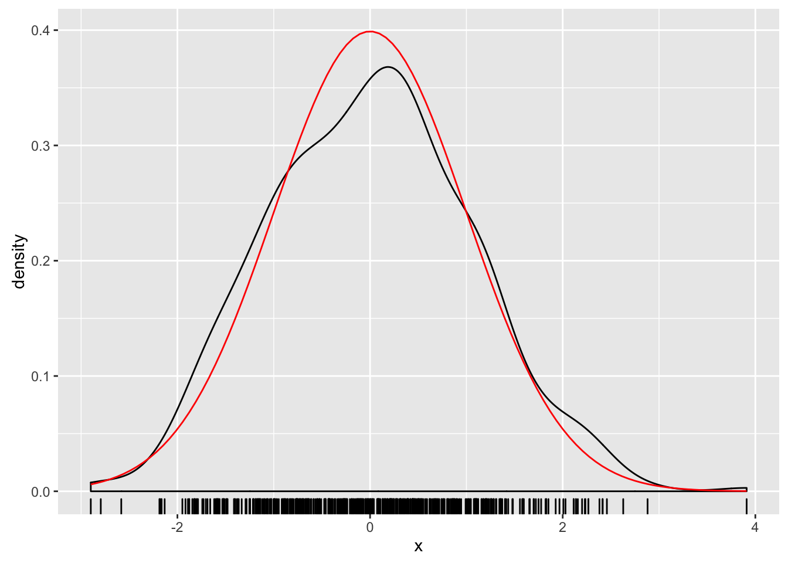 Like the other normal distribution functions, it has sd and mean arguments,
mu <- 2
sigma <- 4
smpl <- rnorm(500, mean = mu, sd = sigma)
ggplot(data_frame(x = smpl), aes(x = x)) +
geom_density() +
geom_rug() +
stat_function(color = "red", fun = "dnorm", args = list(sd = sigma,
mean = mu))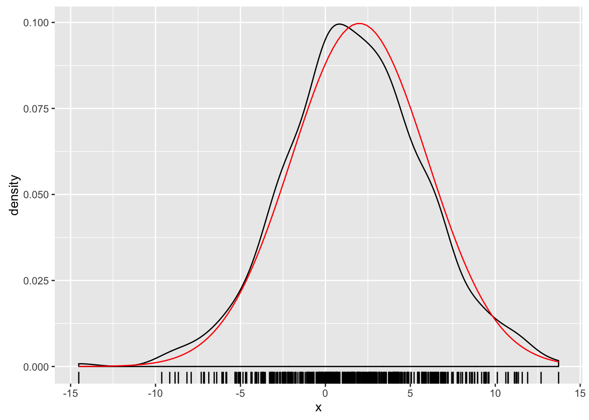
Bernoulli, Binomial
The binomial distribution is a discrete distribution with the density function, \[ p(x | n, p) = \choose{n}{x} p^x (1 - p)^{n - x} \] for \(x \in 1, \dots, n\), and where \(n\) is an integer \(1, \dots\), and \(p \in [0, 1\). A Bernoulli distribution is a binomial distribution where \(n = 1\), \[ p(x | p) = p^x (1 - p)^{1 - x} \] for \(x \in \{0, 1\}\).
The functions for the Binomial distributions are
dbinom: density functionpbinom: probability functionqbinom: quantile functionrbinom: sampling function
To calculate the Binomial probability density function use dbinom. For example, this calculates the density for a binomial distribution with \(p = 0.5\) and \(n = 10\),
dbinom(0:10, size = 10, prob = 0.5)## [1] 0.0009765625 0.0097656250 0.0439453125 0.1171875000 0.2050781250
## [6] 0.2460937500 0.2050781250 0.1171875000 0.0439453125 0.0097656250
## [11] 0.0009765625This plots the Binomial probability density function for \(p = 0.5\) and \(n \in \{5, 10, 15, 20\}\),
binom_densities <-
expand.grid(size = c(5, 10, 15, 20),
prob = 0.5) %>%
group_by(size, prob) %>%
do(data_frame(x = 0:20,
density = dbinom(x, size = .$size, prob = .$prob)))
ggplot(binom_densities, aes(x = x, y = density, colour = factor(size))) +
geom_point() +
geom_line()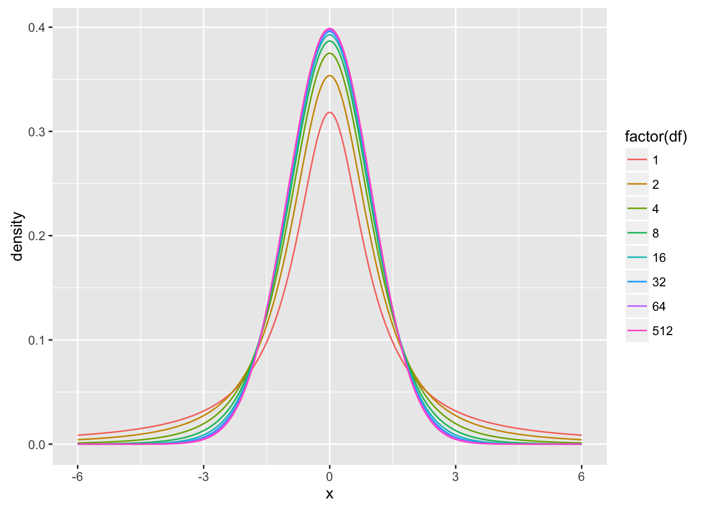
This plots the Binomial probability density function for \(p \in \{0.125, 0.25, 0.5, 0.75\}\) and \(n = 20\),
binom_densities <-
expand.grid(size = 20,
prob = c(0.125, 0.25, 0.5, 0.75)) %>%
group_by(size, prob) %>%
do(data_frame(x = 0:20,
density = dbinom(x, size = .$size, prob = .$prob)))
ggplot(binom_densities, aes(x = x, y = density, colour = factor(prob))) +
geom_point() +
geom_line()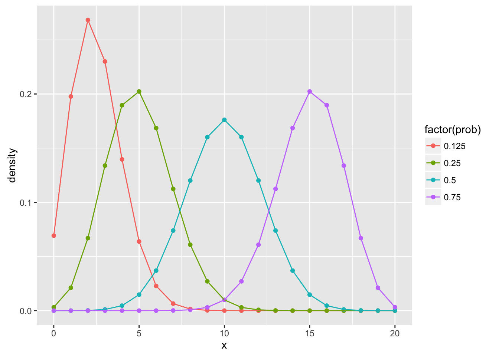
The function pnorm() calculates the Binomial cumulative probability function, \(F(x) = \Pr(X \leq x)\),
pbinom(0:5, size = 5, prob = 0.5)## [1] 0.03125 0.18750 0.50000 0.81250 0.96875 1.00000which is equivalent to cumulatively summing the density function,
cumsum(dbinom(0:5, size = 5, prob = 0.5))## [1] 0.03125 0.18750 0.50000 0.81250 0.96875 1.00000To calculate the complementary cumulative probability function (CCDF), \(\bar{F}(x) = \Pr(X > x)\), use the argument lower.tail = FALSE,
pbinom(0:5, size = 5, prob = 0.5, lower.tail = FALSE)## [1] 0.96875 0.81250 0.50000 0.18750 0.03125 0.00000This is eqivalent to 1 minus the CDF,
1 - pbinom(0:5, size = 5, prob = 0.5)## [1] 0.96875 0.81250 0.50000 0.18750 0.03125 0.00000This plots the Binomial cumulative distribution function for \(p = 0.5\), and \(n \in \{5, 10, 15, 20\}\),
expand.grid(size = c(5, 10, 15, 20),
prob = 0.5) %>%
group_by(size, prob) %>%
do(data_frame(x = 0:20,
density = pbinom(x, size = .$size, prob = .$prob))) %>%
ggplot(aes(x = x, y = density, colour = factor(size))) +
geom_point() +
geom_line()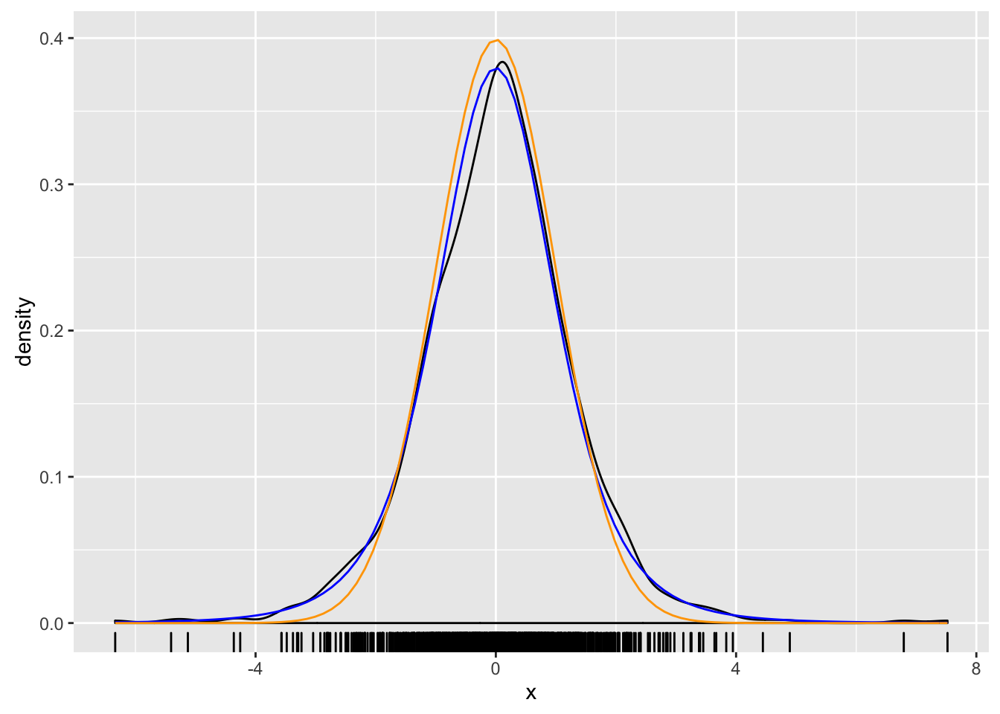
This plots the Binomial cumulative distribution function for \(p = 0.5\), \(p \in \{0.125, 0.25, 0.5, 0.75\}\) and \(n = 20\),
expand.grid(size = 20,
prob = c(0.125, 0.25, 0.5, 0.75)) %>%
group_by(size, prob) %>%
do(data_frame(x = 0:20,
density = pbinom(x, size = .$size, prob = .$prob))) %>%
ggplot(aes(x = x, y = density, colour = factor(prob))) +
geom_point() +
geom_line()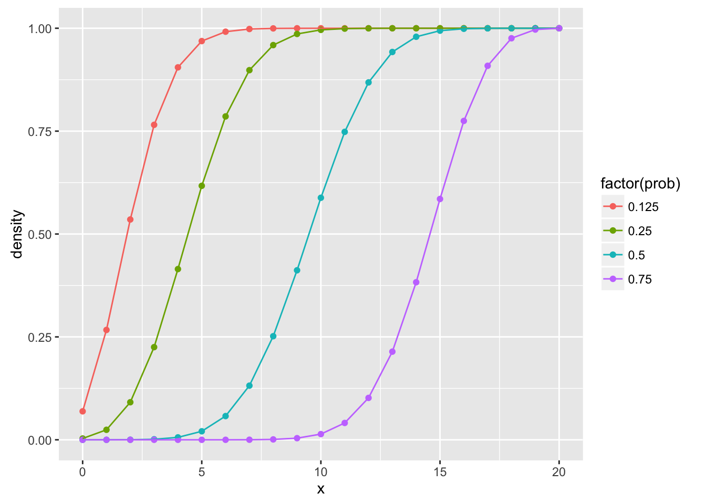
The quantile function is the inverse of the cumulative density function. For a given probability, \(p\), it returns the value \(x\) such that \(P(X \leq x) = p\). For example, for the Binomial distribution with \(n = 5\), and \(p = 0.25\), the value where \(P(X \leq x) = 0.75\) is
qbinom(0.75, size = 5, prob = 0.25)## [1] 2This plots the Binomial quantile function for \(p = 0.5\), and \(n \in \{5, 10, 15, 20\}\),
expand.grid(size = c(5, 10, 15, 20),
prob = 0.5) %>%
group_by(size, prob) %>%
do(data_frame(x = seq(0, 1, length.out = 101),
density = qbinom(x, size = .$size, prob = .$prob))) %>%
ggplot(aes(x = x, y = density, colour = factor(size))) +
geom_point() +
geom_line()This plots the Binomial quantile function for \(p = 0.5\), \(p \in \{0.125, 0.25, 0.5, 0.75\}\) and \(n = 20\),
expand.grid(size = 20,
prob = c(0.125, 0.25, 0.5, 0.75)) %>%
group_by(size, prob) %>%
do(data_frame(x = seq(0, 1, length.out = 101),
density = qbinom(x, size = .$size, prob = .$prob))) %>%
ggplot(aes(x = x, y = density, colour = factor(prob))) +
geom_point() +
geom_line()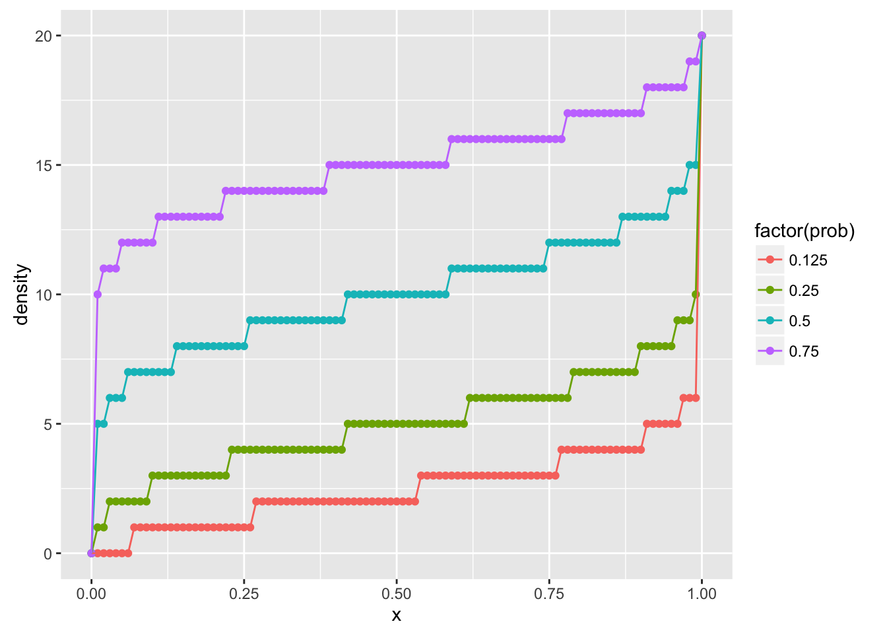
Geometric
TODO
Function is dgeom.
Poisson
TODO
Function is dpois.
Seed
When R generates random numbers it is not actually, random, but a type of algorithm known as a pseudo-randome number generator. In short, these are algorithms that are deterministic, but procude a sequence of numbers that have properties similar to those if they were actually generated randomly. This also means that you can exactly replicate random number results in R, as long as you set an object called the “seed” using a function called set.seed.
set.seed(12345)
sample(1:10, 3)## [1] 8 10 7sample(1:10, 3)## [1] 9 5 2set.seed(12345)
sample(1:10, 3)## [1] 8 10 7sample(1:10, 3)## [1] 9 5 2set.seed(12345)
sample(1:10, 3)## [1] 8 10 7sample(1:10, 3)## [1] 9 5 2In scripts where you randomly sample (or to be safe, all scripts), you should set a seed so that others can exactly replicate your results.

This work is licensed under a Creative Commons Attribution-NonCommercial-ShareAlike 4.0 International License. R code is licensed under a BSD 2-clause license.